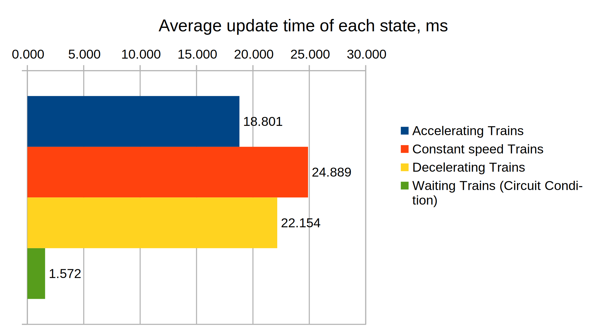
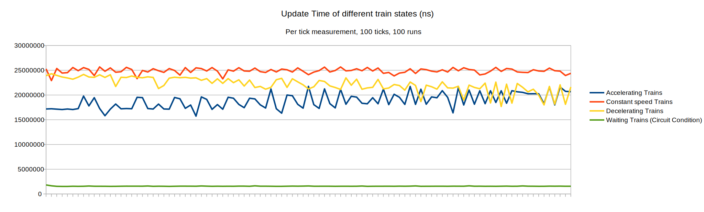
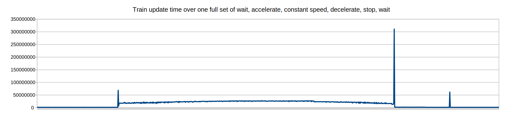
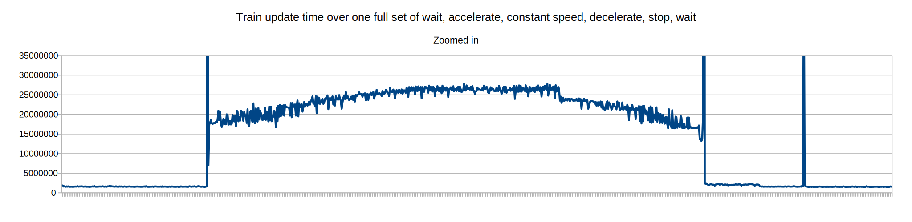

test-000103 : Performance of trains in different states
Factorio Version 0.17.33
The TLDR
Trains are an order of magnitude more computationally expensive while moving than while stationary. While moving, performance cost seems to be linked to train speed; faster trains are more impacting on performance.
The Question
How much more expensive are moving trains than stationary trains? Does it matter whether the train is accelerating or decelerating or going at full speed?
The Test
The test consists of 1000 6-12 trains facing east. All start stations are connected to the circuit network and set to send the signal to the trains. The game was saved at the following points:
All trains stationary (with wait for circuit network G > 0 condition)
A few ticks after trains start accelerating.
A few ticks after trains reach full speed.
A few ticks after trains start decelerating.
All trains stationary with a circuit network timer set to start them when it reaches 200. This map was only used for the full trip measurement.
The track is long enough to guarantee over 100 ticks at full speed. 100 ticks are sampled from each save. 6-12 trains were chosen because they would have at least 100 ticks in each of the states.
The Data


Stationary trains are less than 10% of the processing cost of moving trains.
Trains are more expensive the faster they're going. This might be due to number of collision grids entered in each tick. It might also have something to do with how locomotives generate smoke.
This prompted me to want to see what the whole run looked like, so I ran another test start to finish and got this:

We can see the trains start out in idle, start moving when the circuit network timer tells them to start (the spike here at time 182 is the rail pathfinder), move to the other station and stop. I'm not sure what the large spike when the train stops or the one two seconds afterward are.
Here's the same thing with the large spikes filtered out so we can see better.

It's quite clear that the performance cost slowly increases as the train gains speed, then decreases again once it starts braking. Braking is an immediate significant decrease from constant speed once it starts, likely because the math for braking is much simpler than that used for acceleration and constant speed. It might also be because trains stop generating smoke when they brake.
Faster moving trains are the more expensive. When a train starts moving there is a large (expected) spike in overhead due to the rail pathfinder being run. When stopping there is another large spike for unknown reasons, and again two seconds later. Additional investigation will be required to determine what causes these spikes (one possibility is generation of smoke when the train stops).